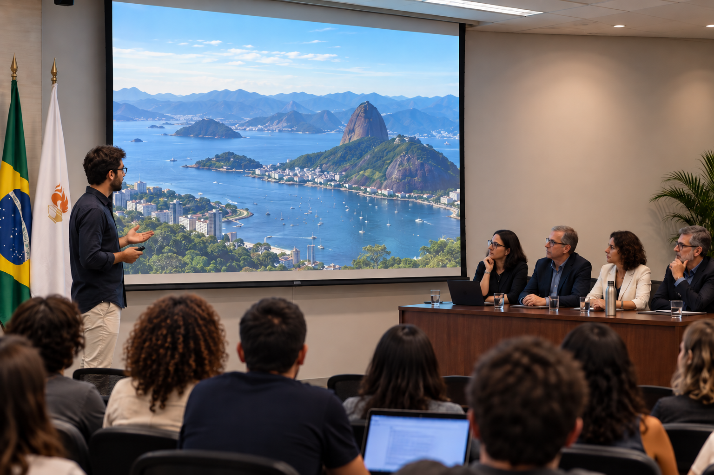

MAREL Scientific Journey
On November 17, 2026, the IRL MAREL held its Scientific Journey (Journée Scientifique), bringing together researchers, students and collaborators from CNRS, UERJ and UFF.
The event featured presentations from invited speakers and discussions on the progress of the laboratory's three scientific themes. It was an excellent opportunity to strengthen collaborations and share the latest results from our research on tropical coastal ecosystems.
We thank all participants and speakers for their valuable contributions.